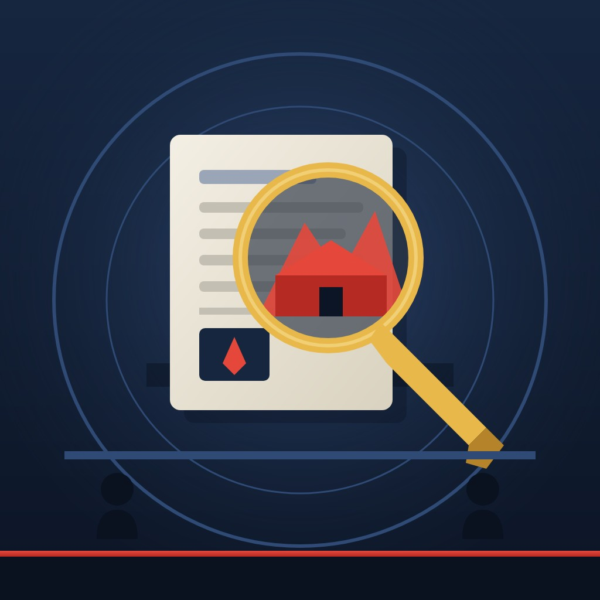

World

US Army soldier held in England on suspicion of spying for Russia
British counter-terrorism police have arrested a 41-year-old US Army soldier near Gloucester under the National Security Act 2023, on suspicion of handling protected information and assisting Russian intelligence.
Abstract
British counter-terrorism police arrested a 41-year-old member of the US Army near Gloucester on 10 November 2026 on suspicion of offences under Section 1 and Section 3 of the National Security Act 2023, and the Metropolitan Police said that the country to which the allegations relate is Russia[1,2]. Counter Terrorism Policing London is leading the investigation with US authorities, the US military and the FBI[1]. NBC News, citing three sources and a senior NATO military official, reported that he was stationed at the headquarters of NATO's Allied Rapid Reaction Corps at Imjin Barracks[2]. Section 1 carries a maximum of life imprisonment and Section 3 a maximum of 14 years, and detention under the Act can last at most 14 days from arrest[3,4,5]. British and American officials described the arrest as the result of close collaboration, while the Kremlin denied any connection[1,6,7]. The case raises a question of jurisdiction under Article VII of the 1951 NATO Status of Forces Agreement, which gives the sending state the primary right for offences solely against its own property or security[8]. It follows an earlier Russian espionage case in Britain, in which the ringleader of a Bulgarian ring was sentenced in May 2025[9]. The soldier has not been named or charged, and his posting rests on unnamed sources rather than an official statement[2,10,11].
Key points
- A 41-year-old US Army soldier was arrested near Gloucester on 10 November 2026 on suspicion of offences under Sections 1 and 3 of the National Security Act 2023[1].
- Section 1 carries a maximum of life imprisonment, while Section 3 carries a maximum of 14 years' imprisonment[3,4].
- Detention under the Act can last at most 14 days from the time of arrest[5].
- NBC News, citing three sources and a senior NATO military official, reported that he was stationed at the headquarters of NATO's Allied Rapid Reaction Corps[2].
- Kash Patel said the FBI had made at least 167 counterintelligence and espionage arrests in 21 months, which he described as a 53% increase[12,13].
- MI5's Director General reported a 35% increase over the previous year in the number of people investigated for possible work for hostile states[14].
References
- Member of US army arrested as part of Counter Terrorism Policing investigation. Metropolitan Police; 10 Nov 2026. Official statement✓ Link checkedArchived copySupports the arrest date, age, sections of the Act, US Army membership, searches, custody, lead unit, partners and the statements by Evans, Patel and Stinchon. ↩
- Senior U.S. Army soldier arrested in U.K. on suspicion of assisting Russian intelligence. NBC News; 10 Nov 2026. News report✓ Link checkedSupports the Met quote naming Russia, the content of Sections 1 and 3, the ARRC posting reported by anonymous sources, and Patel's 'no tolerance' remark. ↩
- National Security Act 2023, Section 1: Obtaining or disclosing protected information. legislation.gov.uk; 2023. Court or legal document✓ Link checkedArchived copySupports the elements of the Section 1 offence, the definition of protected information, its reach outside the UK, the life sentence and the 20 December 2023 commencement. ↩
- National Security Act 2023, Section 3: Assisting a foreign intelligence service. legislation.gov.uk; 2023. Court or legal document✓ Link checkedArchived copySupports the intentional and reckless forms of the Section 3 offence, the conduct it covers and the 14-year maximum. ↩
- National Security Act 2023, Schedule 6: Detention under section 27. legislation.gov.uk; 2023. Court or legal document✓ Link checkedArchived copySupports the warrants of further detention and the 14-day maximum from arrest. ↩
- US soldier arrested in England on suspicion of spying for Russia. Euronews; 11 Nov 2026. News report✓ Link checkedArchived copySupports the Evans and Patel quotes and the police statement that the case is not linked to other investigations. ↩
- Kremlin denies links to senior US Army soldier arrested in UK over suspected spying for Russia. LBC; 11 Nov 2026. News report✓ Link checkedArchived copySupports Peskov's denial quote. ↩
- Agreement between the Parties to the North Atlantic Treaty regarding the Status of their Forces. Likumi.lv (Latvian official legal portal); 19 Jun 1951. Court or legal document✓ Link checkedArchived copySupports the signing date and place and the jurisdiction rules in Article VII, including the security offences listed. ↩
- How prosecutors brought a Russian spy ring operating in the UK to justice. Crown Prosecution Service; 12 May 2025. Official statement✓ Link checkedArchived copySupports the dates, sentences, Marsalek's role, the targets and the Official Secrets Act charges in the Bulgarian ring case. ↩
- US Army soldier arrested in UK on suspicion of espionage related to Russia. KRDO (CNN syndication); 11 Nov 2026. News report✓ Link checkedArchived copySupports the NATO official's ARRC quote, the field grade officer description and Peskov's statement that Russia does not know what the arrest relates to. ↩
- US soldier accused of spying for Russia arrested in the UK: Officials. ABC News; 10 Nov 2026. News report✓ Link checkedArchived copySupports the report that the name will be released after charges, the US intelligence contingent at Imjin Barracks, and the possibility of British and US military proceedings. ↩
- US Army soldier detained near Gloucester in Russia-linked espionage probe. Fox News; 10 Nov 2026. News report✓ Link checkedArchived copySupports the Stinchon and Patel quotes and Patel's figure of 167 arrests in 21 months, a 53% increase. ↩
- UK arrests US soldier suspected of spying for Russia. RTÉ; 10 Nov 2026. News report✓ Link checkedArchived copySupports the involvement of MI5 and UK Defence Counter Intelligence and Patel's arrest statistics. ↩
- 'A new era': UK facing rising threats from state actors as well as terrorists, says MI5 chief. RNZ; 17 Oct 2025. News report✓ Link checkedArchived copySupports the 16 October 2025 speech, the 35% rise in investigations and the Russian activity McCallum described. ↩
An arrest near a NATO headquarters in Gloucestershire
On Tuesday 10 November 2026, police arrested a 41-year-old man near Gloucester, in western England, on suspicion of offences under Section 1 and Section 3 of the National Security Act 2023, according to the Metropolitan Police[1]. The man is a member of the US Army and remained in custody at a London police station while officers searched two locations in Gloucestershire[1]. The Metropolitan Police also said that "the country to which the allegations relate is Russia"[2]. Counter Terrorism Policing London is leading the investigation, working with US authorities, the US military and the FBI[1].
The soldier has not been named and, as of 11 November, had not been charged. ABC News reported that his name would be released only if formal charges are filed[3]. An arrest on suspicion is the first stage of a British criminal investigation and does not establish that any offence took place.
His posting has not been confirmed in an official statement. NBC News, citing three sources familiar with the matter and a senior NATO military official, reported that he was stationed at the headquarters of NATO's Allied Rapid Reaction Corps (ARRC) at Imjin Barracks, on the outskirts of Gloucester[2]. The ARRC is a three-star headquarters with more than 400 permanent staff[4,5].
What the National Security Act 2023 makes a crime
The National Security Act 2023 is Britain's main law against espionage and other hostile activity by foreign states. According to the Home Office, it repealed the Official Secrets Acts of 1911, 1920 and 1939 and replaced them with three espionage offences, and it raised the maximum sentence for the offence covering protected information from 14 years to life imprisonment[6].
Section 1 makes it an offence to obtain, copy, record, retain, disclose or provide access to protected information for a purpose that the person knows, or ought reasonably to know, is prejudicial to the safety or interests of the United Kingdom[7]. It applies whether the conduct takes place in the United Kingdom or elsewhere[7]. Section 3 is broader. A person commits the offence if they intend their conduct to materially assist a foreign intelligence service in carrying out activities related to the United Kingdom, or if they know, or ought reasonably to know, that their conduct is likely to do so[8]. The maximum penalty is 14 years' imprisonment[8].
A person arrested on suspicion of foreign power threat activity must be released within 48 hours unless detention is extended[9]. A court may issue warrants of further detention, up to a maximum of 14 days from the time of arrest[10]. Police will therefore have to decide within about two weeks of the arrest whether to charge him, release him or rely on another power.
Which country may try a US soldier serving with NATO in Britain
Because the suspect is a US soldier on a NATO posting in Britain, the case raises the question of which country has the right to try him. The answer lies in the 1951 NATO Status of Forces Agreement[11]. Article VII gives the military authorities of the sending state, here the United States, the right to exercise criminal and disciplinary jurisdiction over members of its forces, and gives the receiving state, here the United Kingdom, jurisdiction over offences committed on its territory[11]. The treaty lists "sabotage, espionage or violation of any law relating to official secrets" among offences against the security of a state[11]. Where both states have jurisdiction, the sending state has the primary right for offences "solely against the property or security of that State", and the receiving state has the primary right in other cases[11].
On the treaty's wording, the outcome may depend on whose secrets were allegedly involved. Section 1 of the British Act requires prejudice to the United Kingdom's safety or interests, so a British prosecution would not be for an offence solely against American security. The public statements issued so far do not say how the two governments will settle the question. ABC News reported that the case could involve both British law and the US military courts[3].
Official statements and earlier Russian espionage cases
British and American officials issued coordinated statements[1]. Deputy Assistant Commissioner Vicki Evans said: "This significant arrest and investigation is a result of close collaboration between UK and US authorities. The allegations are serious and our investigation is very much ongoing"[1,12]. FBI Director Kash Patel said: "This important arrest involves allegations of espionage, which is of the utmost concern to the United States and our allies"[1,12]. Brigadier General Sean Stinchon said: "The alleged conduct of a senior soldier, entrusted with sensitive information, is a sobering reminder that insider threats are real and persistent"[13,14]. The Metropolitan Police said the arrest was "not linked to any other ongoing Counter Terrorism Policing investigations"[12,13].
The Russian government rejected any connection. Kremlin spokesman Dmitry Peskov was quoted as saying: "We have absolutely nothing to do with this, and it has absolutely nothing to do with us"[15].
The arrest follows earlier cases. Six Bulgarian nationals ran an espionage operation for Russian intelligence between August 2020 and February 2023, according to the Crown Prosecution Service, and were sentenced on 12 May 2025, with the ringleader, Orlin Roussev, receiving 10 years and 8 months[16]. In a speech on 16 October 2025, MI5's Director General, Ken McCallum, reported a 35% increase over the previous year in the number of people investigated for possible work for hostile states[17,18].
Competing readings and what remains uncertain
British and American officials present the arrest as proof that their cooperation works, and Patel places it within an account of a stronger FBI effort against espionage, which he supports with a figure of at least 167 arrests in 21 months, a 53% increase[1,14,19,20]. The Kremlin denies any involvement and says it does not know what the case is about[15,21]. None of these positions is evidence about what the soldier did or did not do, because no charge has been brought and no evidence has been tested in court.
Much of what has been reported rests on unnamed sources. The soldier's posting comes from anonymous officials quoted by NBC News and CNN, not from an official statement[2,21]. His rank is unclear: General Stinchon called him a "senior soldier", while CNN reported that he is a field grade officer[13,21]. The authorities have not said what information is alleged to have been obtained or passed on, to which Russian service, or over what period. It is also not known which country will prosecute if charges are brought.
References
- Member of US army arrested as part of Counter Terrorism Policing investigation. Metropolitan Police; 10 Nov 2026. Official statement✓ Link checkedArchived copySupports the arrest date, age, sections of the Act, US Army membership, searches, custody, lead unit, partners and the statements by Evans, Patel and Stinchon. ↩
- Senior U.S. Army soldier arrested in U.K. on suspicion of assisting Russian intelligence. NBC News; 10 Nov 2026. News report✓ Link checkedSupports the Met quote naming Russia, the content of Sections 1 and 3, the ARRC posting reported by anonymous sources, and Patel's 'no tolerance' remark. ↩
- US soldier accused of spying for Russia arrested in the UK: Officials. ABC News; 10 Nov 2026. News report✓ Link checkedArchived copySupports the report that the name will be released after charges, the US intelligence contingent at Imjin Barracks, and the possibility of British and US military proceedings. ↩
- American soldier arrested on suspicion of spying for Russia. CNBC; 11 Nov 2026. News report✓ Link checkedArchived copySupports the maximum penalties, the ARRC staff of more than 400 from more than 20 nations, and the Abu Dhabi talks being the first since February. ↩
- Imjin Barracks. Wikipedia. Reference work✓ Link checkedArchived copySupports the history of RAF Innsworth, the ARRC's 2010 move from Rheindahlen, and its three-star status with more than 400 staff from 21 nations. ↩
- Espionage etc: National Security Bill factsheet. GOV.UK. Official report✓ Link checkedArchived copySupports the repeal of the 1911, 1920 and 1939 Acts, the three espionage offences, the increase in the maximum sentence and the foreign power condition. ↩
- National Security Act 2023, Section 1: Obtaining or disclosing protected information. legislation.gov.uk; 2023. Court or legal document✓ Link checkedArchived copySupports the elements of the Section 1 offence, the definition of protected information, its reach outside the UK, the life sentence and the 20 December 2023 commencement. ↩
- National Security Act 2023, Section 3: Assisting a foreign intelligence service. legislation.gov.uk; 2023. Court or legal document✓ Link checkedArchived copySupports the intentional and reckless forms of the Section 3 offence, the conduct it covers and the 14-year maximum. ↩
- National Security Act 2023, Section 27: Arrest without warrant. legislation.gov.uk; 2023. Court or legal document✓ Link checkedArchived copySupports the 48-hour limit on detention after arrest unless it is extended. ↩
- National Security Act 2023, Schedule 6: Detention under section 27. legislation.gov.uk; 2023. Court or legal document✓ Link checkedArchived copySupports the warrants of further detention and the 14-day maximum from arrest. ↩
- Agreement between the Parties to the North Atlantic Treaty regarding the Status of their Forces. Likumi.lv (Latvian official legal portal); 19 Jun 1951. Court or legal document✓ Link checkedArchived copySupports the signing date and place and the jurisdiction rules in Article VII, including the security offences listed. ↩
- US soldier arrested in England on suspicion of spying for Russia. Euronews; 11 Nov 2026. News report✓ Link checkedArchived copySupports the Evans and Patel quotes and the police statement that the case is not linked to other investigations. ↩
- US soldier arrested in UK for suspected 'espionage' for Russia. Defense News; 10 Nov 2026. News report✓ Link checkedSupports Stinchon's 'sobering reminder' quote, the content of Sections 1 and 3, the 'not linked' police statement and the Mildenhall and Fairford context. ↩
- US Army soldier detained near Gloucester in Russia-linked espionage probe. Fox News; 10 Nov 2026. News report✓ Link checkedArchived copySupports the Stinchon and Patel quotes and Patel's figure of 167 arrests in 21 months, a 53% increase. ↩
- Kremlin denies links to senior US Army soldier arrested in UK over suspected spying for Russia. LBC; 11 Nov 2026. News report✓ Link checkedArchived copySupports Peskov's denial quote. ↩
- How prosecutors brought a Russian spy ring operating in the UK to justice. Crown Prosecution Service; 12 May 2025. Official statement✓ Link checkedArchived copySupports the dates, sentences, Marsalek's role, the targets and the Official Secrets Act charges in the Bulgarian ring case. ↩
- 'A new era': UK facing rising threats from state actors as well as terrorists, says MI5 chief. RNZ; 17 Oct 2025. News report✓ Link checkedArchived copySupports the 16 October 2025 speech, the 35% rise in investigations and the Russian activity McCallum described. ↩
- UK's MI5 chief calls China a security threat as officials trade blame over spy case collapse. PBS NewsHour (Associated Press); 16 Oct 2025. News report✓ Link checkedArchived copyReports that McCallum gave his annual speech on Thursday, 16 October 2025, and gave a 35% rise in state-threat investigations. ↩
- UK arrests US soldier suspected of spying for Russia. RTÉ; 10 Nov 2026. News report✓ Link checkedArchived copySupports the involvement of MI5 and UK Defence Counter Intelligence and Patel's arrest statistics. ↩
- U.S. soldier accused of spying linked to Russia arrested in the U.K. CBS News; 10 Nov 2026. News report✓ Link checkedArchived copySupports Evans's partnership quote and the timing of the Abu Dhabi talks, the first in about nine months. ↩
- US Army soldier arrested in UK on suspicion of espionage related to Russia. KRDO (CNN syndication); 11 Nov 2026. News report✓ Link checkedArchived copySupports the NATO official's ARRC quote, the field grade officer description and Peskov's statement that Russia does not know what the arrest relates to. ↩
Abstract
British counter-terrorism police arrested a 41-year-old member of the US Army near Gloucester on 10 November 2026 on suspicion of offences under Section 1 and Section 3 of the National Security Act 2023, and the Metropolitan Police said that the country to which the allegations relate is Russia[1,2]. Counter Terrorism Policing London is leading the investigation with US authorities, the US military and the FBI[1]. NBC News, citing three sources and a senior NATO military official, reported that he was stationed at the headquarters of NATO's Allied Rapid Reaction Corps at Imjin Barracks[2]. Section 1 carries a maximum of life imprisonment and Section 3 a maximum of 14 years, and detention under the Act can last at most 14 days from arrest[3,4,5]. British and American officials described the arrest as the result of close collaboration, while the Kremlin denied any connection[1,6,7]. The case raises a question of jurisdiction under Article VII of the 1951 NATO Status of Forces Agreement, which gives the sending state the primary right for offences solely against its own property or security[8]. It follows an earlier Russian espionage case in Britain, in which the ringleader of a Bulgarian ring was sentenced in May 2025[9]. The soldier has not been named or charged, and his posting rests on unnamed sources rather than an official statement[2,10,11].
1An arrest near a NATO headquarters in Gloucestershire
On Tuesday 10 November 2026, police arrested a 41-year-old man near Gloucester, in western England, on suspicion of offences under Section 1 and Section 3 of the National Security Act 2023, according to a statement from the Metropolitan Police[1]. The statement said the man is a member of the US Army and that he remained in custody at a London police station while officers searched two locations in Gloucestershire[1]. The Metropolitan Police also said that "the country to which the allegations relate is Russia"[2]. Counter Terrorism Policing London is leading the investigation, working with US authorities, the US military and the FBI[1].
The soldier has not been named and, as of 11 November, had not been charged. ABC News reported that his name would be released only if formal charges are filed[11]. Section 1 of the Act concerns obtaining or disclosing protected information, and Section 3 concerns assisting a foreign intelligence service[2,12]. An arrest on suspicion is the first stage of a British criminal investigation and does not establish that any offence took place.
The soldier's posting has not been confirmed in an official statement, but it has been reported consistently. NBC News, citing three sources familiar with the matter and a senior NATO military official, reported that he was stationed at the headquarters of NATO's Allied Rapid Reaction Corps (ARRC) at Imjin Barracks, on the outskirts of Gloucester[2]. A senior NATO official told CNN that the soldier "was assigned to the Allied Rapid Reaction Corps"[10]. ABC News reported that a small group of US intelligence soldiers at the barracks processes alliance intelligence[11].
The case matters because of who the suspect is said to be. Brigadier General Sean Stinchon, commanding general of US Army Counterintelligence Command, said: "The alleged conduct of a senior soldier, entrusted with sensitive information, is a sobering reminder that insider threats are real and persistent"[12,13]. The Metropolitan Police said the arrest was "not linked to any other ongoing Counter Terrorism Policing investigations"[6,12]. The allegation is that someone with access to information inside a multinational NATO headquarters may have worked for Russian intelligence while the war in Ukraine continues. If it is proved, that would be among the most serious breaches the alliance has faced on British soil.
2What the National Security Act 2023 makes a crime
The National Security Act 2023 is Britain's main law against espionage and other hostile activity by foreign states. According to the Home Office, it repealed the Official Secrets Acts of 1911, 1920 and 1939 and replaced them with three espionage offences: obtaining or disclosing protected information, obtaining or disclosing trade secrets, and assisting a foreign intelligence service[14]. The Home Office said the offence covering protected information raised the maximum sentence from 14 years under the old law to life imprisonment[14]. The offences covering protected information and trade secrets carry a condition that the person acted for, on behalf of, or with the intention of benefiting a foreign power[14].
Section 1 makes it an offence to obtain, copy, record, retain, disclose or provide access to protected information for a purpose that the person knows, or ought reasonably to know, is prejudicial to the safety or interests of the United Kingdom[3]. The Act defines protected information as material to which access is restricted, or would reasonably be expected to be restricted, "for the purpose of protecting the safety or interests of the United Kingdom"[3]. The offence applies whether the conduct takes place in the United Kingdom or elsewhere, carries a maximum of life imprisonment, and came into force on 20 December 2023[3].
Section 3 is broader. A person commits the offence if they intend their conduct to materially assist a foreign intelligence service in carrying out activities related to the United Kingdom, or if they know, or ought reasonably to know, that their conduct is likely to do so[4]. The conduct can include providing information, goods, services or financial benefits, directly or indirectly, and the maximum penalty is 14 years' imprisonment[4]. CNBC reported the same maximum penalties for the two offences in this case[15].
The Act also contains special powers of arrest and detention. Under Section 27, a person arrested on suspicion of foreign power threat activity must be released within 48 hours unless detention is extended[16]. Schedule 6 lets a court issue warrants of further detention, up to a maximum of 14 days from the time of arrest[5]. Asharq Al-Awsat reported that the soldier can be held without charge for up to 14 days[17]. Police will therefore have to decide within about two weeks of the arrest whether to charge him, release him or rely on another power.
3A multinational corps and the question of jurisdiction
Imjin Barracks stands on the site of the former RAF Innsworth, which was a Royal Air Force station from 1940 to 2008[18]. The ARRC headquarters moved there in 2010 from the Rheindahlen Military Complex in Germany[18]. It is a three-star headquarters, commanded by a lieutenant general, with more than 400 permanent staff[15,18,19]. Sources describe its staff as coming from 21 contributing nations, or from more than 20 nations[15,18]. Asharq Al-Awsat noted that the barracks is near GCHQ, Britain's signals intelligence agency[17]. RTÉ reported that the investigation also involved MI5 and UK Defence Counter Intelligence[20].
Because the suspect is a US soldier on a NATO posting in Britain, the case raises the question of which country has the right to try him. The answer lies in the 1951 NATO Status of Forces Agreement, signed in London on 19 June 1951[8]. Article VII gives the military authorities of the sending state, here the United States, the right to exercise criminal and disciplinary jurisdiction over members of its forces. It gives the receiving state, here the United Kingdom, jurisdiction over offences committed on its territory[8]. The treaty lists "sabotage, espionage or violation of any law relating to official secrets" among offences against the security of a state[8]. Where both states have jurisdiction, the sending state has the primary right for offences "solely against the property or security of that State", and the receiving state has the primary right in other cases[8].
On the treaty's wording, the outcome may depend on whose secrets were allegedly involved. Section 1 of the British Act requires prejudice to the United Kingdom's safety or interests, so a British prosecution would not be for an offence solely against American security. The public statements issued so far do not say how the two governments will settle the question.
US military law sets out a separate route. Article 103a of the Uniform Code of Military Justice makes it an offence for any person subject to the code to communicate or deliver protected information to a foreign government or its agents[21]. Where the information concerns categories such as nuclear weapons, war plans or communications intelligence, the punishment can be "death or such other punishment as a court-martial may direct"[21]. ABC News reported that the case could involve both British law and the US military courts, and that military espionage convictions can carry life sentences[11].
4Official statements from London, Washington and Moscow
British and American officials issued coordinated statements, which the Metropolitan Police published together on the evening of 10 November[1]. Deputy Assistant Commissioner Vicki Evans, the Senior National Coordinator for Counter Terrorism Policing, said: "This significant arrest and investigation is a result of close collaboration between UK and US authorities. The allegations are serious and our investigation is very much ongoing"[1,6]. She added, according to CBS News: "This activity demonstrates the strength of our UK and US law enforcement and national security partnerships, and I commend the work of all the teams involved"[22].
FBI Director Kash Patel said: "This important arrest involves allegations of espionage, which is of the utmost concern to the United States and our allies"[1,6]. He also said that the FBI "has no tolerance for anyone who breaks their oath to the United States"[2,13]. Patel set the case within a broader claim that the FBI under its current leadership had made at least 167 counterintelligence and espionage arrests in 21 months, which he described as a 53% increase[13,20]. The reports do not say which earlier period that increase is measured against. General Stinchon said the case "demonstrates the strength of our partnerships and the resolve of the counterintelligence community"[1].
The Russian government rejected any connection. Kremlin spokesman Dmitry Peskov was quoted as saying: "We have absolutely nothing to do with this, and it has absolutely nothing to do with us"[7]. CNN quoted him as saying: "This arrest has nothing to do with us, and we do not know what it relates to"[10]. Moscow routinely rejects British espionage accusations and makes its own. In March 2026, Russia's Federal Security Service accused a British diplomat in Moscow of intelligence activity, and Russian state television described him as the 16th British diplomat expelled in two years[23]. The UK Foreign Office called those accusations "complete nonsense"[23].
The arrest coincided with US-mediated talks between Russia and Ukraine in Abu Dhabi, which began on 10 November and were the first such meeting since February[15,22]. ABC News reported that Russia's delegation included Igor Kostyukov, head of Russia's foreign military intelligence agency[24]. President Donald Trump said of the war: "I believe that that war is going to end and it's going to end soon"[24]. No official has suggested any link between the arrest and the talks.
5Earlier Russian espionage cases in Britain and the US Army
The arrest follows earlier Russian espionage prosecutions in Britain. One recent case involved six Bulgarian nationals who, according to the Crown Prosecution Service, ran an espionage operation for Russian intelligence between August 2020 and February 2023[9]. On 12 May 2025 the ringleader, Orlin Roussev, was sentenced to 10 years and 8 months[9]. The Crown Prosecution Service said Jan Marsalek, a fugitive wanted over the Wirecard fraud, passed instructions from Russian intelligence to Roussev[9]. Their targets included investigative journalists, a political asylum seeker, a US military base in Stuttgart and the Kazakh embassy[9].
When three members of that ring were convicted in March 2025, Commander Dominic Murphy of the Metropolitan Police's Counter Terrorism Command described their work as "spying on an almost industrial scale on behalf of Russia, the Russian state and Russian intelligence services"[25]. A later case shows the new Act in use. In September 2026, Joshua Cammidge, 31, appeared in court charged with two National Security Act offences, assisting a foreign intelligence service and preparing to commit sabotage[26]. Prosecutors allege that he gave information on drone manufacturing sites in Swindon to a group they say is controlled by the GRU[26]. He entered no plea, was remanded in custody, and his case was sent to the Old Bailey[26]. He has not been convicted.
Britain's Security Service has described a rising threat from states. In a speech on 16 October 2025, MI5's Director General, Ken McCallum, reported a 35% increase over the previous year in the number of people investigated for possible work for hostile states[27,28]. He cited Russian activity including arson, attempted sabotage and the collection of targeting information about individuals[27].
The US Army has faced Russian recruitment of its own people before. In May 2021, Peter Debbins, a former Army captain who had served in the Special Forces, was sentenced in the United States to 15 years and 8 months in prison[29]. He had been convicted of conspiring with Russian intelligence over a period from 1996 to 2011, during which he gave the names of fellow Special Forces soldiers[29]. That case shows how long such a relationship can go undetected, but it says nothing about the facts of the present one.
6Iranian threats, alliance trust and competing readings
The arrest came during a week of separate security alarms at American bases in England. Defense News and Army Times reported that it occurred one day after the United States moved refuelling aircraft out of RAF Mildenhall in eastern England because of an apparent Iranian threat[12,30]. Both outlets also reported that in September the United States had withdrawn bombers used to strike Iran from RAF Fairford on security grounds[12,30]. NPR reported that the Wall Street Journal linked the Mildenhall move to Iranian threats, but that neither government had confirmed this reason publicly[31]. On the same day, US prosecutors indicted three men who they allege acted for Iran's Islamic Revolutionary Guard Corps and the Iraqi militia Kata'ib Hezbollah, including in a planned attack on RAF Fairford[31].
Officials have tried to keep these cases apart. Al Jazeera and The Philadelphia Inquirer reported that the soldier's arrest was unrelated to the Iran-linked threats against air bases[32,33]. The police statement that the case is not linked to other counter-terrorism investigations points the same way[6,12]. The fact that both Gloucestershire sites appear in the news in the same week is a coincidence of geography, as far as the public record shows.
The parties interpret the arrest in different ways. British and American officials present it as proof that their cooperation works: Evans and Stinchon both spoke of the strength of the partnership[1,22]. Patel places it within an account of a stronger FBI effort against espionage, supported by his arrest figures[13]. The Kremlin denies any involvement and says it does not know what the case is about[7,10]. None of these positions is evidence about what the soldier did or did not do, because no charge has been brought and no evidence has been tested in court.
The consequences will depend on facts that are not yet public. If charges follow, the British and American authorities will have to decide on jurisdiction under the Status of Forces Agreement. NATO members will also want to know what information, if any, left the headquarters. Any such assessment is likely to remain classified. A trial in an English court may be held partly in private, as security cases can be, which would limit what the public learns.
Uncertainties and open questions
Much of what has been reported rests on unnamed sources. The soldier's posting at the ARRC comes from anonymous officials quoted by NBC News and CNN, not from an official statement[2,10]. His rank is unclear: General Stinchon called him a "senior soldier", while CNN reported that he is a field grade officer, a rank between major and colonel[10,12]. In US Army usage, a soldier can be either an enlisted member or an officer, so the descriptions are not necessarily in conflict.
The Metropolitan Police gives the date of the arrest as Tuesday, 10 November, whereas one Al Jazeera summary, published on 11 November, gives no arrest date[1,34]. The same Al Jazeera summary described the case as the first suspected instance of its kind involving a US soldier stationed in Britain[34]. Patel's figure of 167 counterintelligence and espionage arrests over 21 months, a 53% increase, comes from the FBI Director himself, and the reports do not say what the increase is measured against[13,20].
The authorities have not said what information is alleged to have been obtained or passed on, to which Russian service, over what period, or whether money changed hands. It is also not known which country will prosecute if charges are brought.
Conclusion
The established facts are few. A 41-year-old US Army soldier was arrested near Gloucester on 10 November 2026 under Sections 1 and 3 of the National Security Act 2023, in an investigation that police say relates to Russia[1,2]. Police were searching two locations, and the soldier was being held in London[1]. Under the Act, he can be detained without charge for at most 14 days from his arrest[5]. Reports by credible outlets, though not official statements, place him at a NATO corps headquarters[2,10]. British and American officials describe the arrest as the result of close cooperation, and the Kremlin denies any link[1,7].
The more important questions remain unanswered: what was allegedly taken, for whom, and with what effect. Those answers will come, if at all, through a charging decision and a trial. Until then the soldier is a suspect, not a convicted spy, and the strength of the evidence against him cannot be judged.
References
- Member of US army arrested as part of Counter Terrorism Policing investigation. Metropolitan Police; 10 Nov 2026. Official statement✓ Link checkedArchived copySupports the arrest date, age, sections of the Act, US Army membership, searches, custody, lead unit, partners and the statements by Evans, Patel and Stinchon. ↩
- Senior U.S. Army soldier arrested in U.K. on suspicion of assisting Russian intelligence. NBC News; 10 Nov 2026. News report✓ Link checkedSupports the Met quote naming Russia, the content of Sections 1 and 3, the ARRC posting reported by anonymous sources, and Patel's 'no tolerance' remark. ↩
- National Security Act 2023, Section 1: Obtaining or disclosing protected information. legislation.gov.uk; 2023. Court or legal document✓ Link checkedArchived copySupports the elements of the Section 1 offence, the definition of protected information, its reach outside the UK, the life sentence and the 20 December 2023 commencement. ↩
- National Security Act 2023, Section 3: Assisting a foreign intelligence service. legislation.gov.uk; 2023. Court or legal document✓ Link checkedArchived copySupports the intentional and reckless forms of the Section 3 offence, the conduct it covers and the 14-year maximum. ↩
- National Security Act 2023, Schedule 6: Detention under section 27. legislation.gov.uk; 2023. Court or legal document✓ Link checkedArchived copySupports the warrants of further detention and the 14-day maximum from arrest. ↩
- US soldier arrested in England on suspicion of spying for Russia. Euronews; 11 Nov 2026. News report✓ Link checkedArchived copySupports the Evans and Patel quotes and the police statement that the case is not linked to other investigations. ↩
- Kremlin denies links to senior US Army soldier arrested in UK over suspected spying for Russia. LBC; 11 Nov 2026. News report✓ Link checkedArchived copySupports Peskov's denial quote. ↩
- Agreement between the Parties to the North Atlantic Treaty regarding the Status of their Forces. Likumi.lv (Latvian official legal portal); 19 Jun 1951. Court or legal document✓ Link checkedArchived copySupports the signing date and place and the jurisdiction rules in Article VII, including the security offences listed. ↩
- How prosecutors brought a Russian spy ring operating in the UK to justice. Crown Prosecution Service; 12 May 2025. Official statement✓ Link checkedArchived copySupports the dates, sentences, Marsalek's role, the targets and the Official Secrets Act charges in the Bulgarian ring case. ↩
- US Army soldier arrested in UK on suspicion of espionage related to Russia. KRDO (CNN syndication); 11 Nov 2026. News report✓ Link checkedArchived copySupports the NATO official's ARRC quote, the field grade officer description and Peskov's statement that Russia does not know what the arrest relates to. ↩
- US soldier accused of spying for Russia arrested in the UK: Officials. ABC News; 10 Nov 2026. News report✓ Link checkedArchived copySupports the report that the name will be released after charges, the US intelligence contingent at Imjin Barracks, and the possibility of British and US military proceedings. ↩
- US soldier arrested in UK for suspected 'espionage' for Russia. Defense News; 10 Nov 2026. News report✓ Link checkedSupports Stinchon's 'sobering reminder' quote, the content of Sections 1 and 3, the 'not linked' police statement and the Mildenhall and Fairford context. ↩
- US Army soldier detained near Gloucester in Russia-linked espionage probe. Fox News; 10 Nov 2026. News report✓ Link checkedArchived copySupports the Stinchon and Patel quotes and Patel's figure of 167 arrests in 21 months, a 53% increase. ↩
- Espionage etc: National Security Bill factsheet. GOV.UK. Official report✓ Link checkedArchived copySupports the repeal of the 1911, 1920 and 1939 Acts, the three espionage offences, the increase in the maximum sentence and the foreign power condition. ↩
- American soldier arrested on suspicion of spying for Russia. CNBC; 11 Nov 2026. News report✓ Link checkedArchived copySupports the maximum penalties, the ARRC staff of more than 400 from more than 20 nations, and the Abu Dhabi talks being the first since February. ↩
- National Security Act 2023, Section 27: Arrest without warrant. legislation.gov.uk; 2023. Court or legal document✓ Link checkedArchived copySupports the 48-hour limit on detention after arrest unless it is extended. ↩
- UK Police Hold NATO-assigned US Soldier Suspected of Russia Spying. Asharq Al-Awsat; 11 Nov 2026. News report✓ Link checkedArchived copySupports the report that the soldier can be held without charge for up to 14 days and that the barracks is near GCHQ. ↩
- Imjin Barracks. Wikipedia. Reference work✓ Link checkedArchived copySupports the history of RAF Innsworth, the ARRC's 2010 move from Rheindahlen, and its three-star status with more than 400 staff from 21 nations. ↩
- Allied Rapid Reaction Corps. Wikipedia; 2026. Reference work✓ Link checkedArchived copyNames Lieutenant General Michael Elviss as current commander, and its list of commanders is headed by lieutenant generals. ↩
- UK arrests US soldier suspected of spying for Russia. RTÉ; 10 Nov 2026. News report✓ Link checkedArchived copySupports the involvement of MI5 and UK Defence Counter Intelligence and Patel's arrest statistics. ↩
- United States Code, Title 10, Chapter 47, Subchapter X: Punitive Articles. govinfo.gov; 2024. Court or legal document✓ Link checkedArchived copySupports the scope of UCMJ Article 103a and its punishments. ↩
- U.S. soldier accused of spying linked to Russia arrested in the U.K. CBS News; 10 Nov 2026. News report✓ Link checkedArchived copySupports Evans's partnership quote and the timing of the Abu Dhabi talks, the first in about nine months. ↩
- UK decries 'baseless' spy charge as Russia expels diplomat. Dawn; 31 Mar 2026. News reportSite blocks checksArchived copySupports the March 2026 FSB accusation, the Russian state television count of 16 expelled diplomats and the UK 'complete nonsense' response. ↩
- Russia, Ukraine and US meet for Abu Dhabi talks as Trump says war can 'end soon'. ABC News; 10 Nov 2026. News report✓ Link checkedArchived copySupports Kostyukov's presence in the Russian delegation and Trump's quote. ↩
- Three Bulgarians found guilty of spying for Russia from UK base. Al Jazeera; 7 Mar 2025. News report✓ Link checkedArchived copySupports Commander Dominic Murphy's quote on the March 2025 convictions. ↩
- Brit accused of feeding Russian military intelligence details of UK drone factories. Euronews; 10 Sept 2026. News reportSite blocks checksArchived copySupports the charges against Joshua Cammidge, the GRU allegation and the state of his case. ↩
- 'A new era': UK facing rising threats from state actors as well as terrorists, says MI5 chief. RNZ; 17 Oct 2025. News report✓ Link checkedArchived copySupports the 16 October 2025 speech, the 35% rise in investigations and the Russian activity McCallum described. ↩
- UK's MI5 chief calls China a security threat as officials trade blame over spy case collapse. PBS NewsHour (Associated Press); 16 Oct 2025. News report✓ Link checkedArchived copyReports that McCallum gave his annual speech on Thursday, 16 October 2025, and gave a 35% rise in state-threat investigations. ↩
- Former US Army Green Beret sentenced to 15 years in prison for Russian espionage. Euronews; 14 May 2021. News report✓ Link checkedArchived copySupports the details of the Debbins case: his rank, service, sentence, conspiracy period and the names he passed on. ↩
- US soldier arrested in UK for suspected 'espionage' for Russia. Army Times; 10 Nov 2026. News report✓ Link checkedSupports the Mildenhall aircraft move the day before the arrest and the September withdrawal of bombers from Fairford. ↩
- Iran-backed trio accused of plotting attacks on U.K. base hosting U.S. jets. WFDD (NPR); 11 Nov 2026. News report✓ Link checkedArchived copySupports the indictment of three men over an alleged Iran-backed plot against RAF Fairford and the unconfirmed reason for the Mildenhall move. ↩
- US soldier arrested in UK on suspicion of spying for Russia. Al Jazeera; 10 Nov 2026. News report✓ Link checkedArchived copySupports the report that the arrest was unrelated to the Iran-linked investigations at RAF Fairford. ↩
- U.S. soldier assigned to NATO unit arrested in Britain on suspicion of spying for Russia. The Philadelphia Inquirer; 10 Nov 2026. News report✓ Link checkedSupports the report that the arrest was unrelated to Iran-linked threats against US air bases in Britain. ↩
- US soldier arrested for Russia spying: What we know. Al Jazeera; 11 Nov 2026. News report✓ Link checkedArchived copySupports the conflicting 11 November date and the claim that this is the first suspected case of its kind. ↩